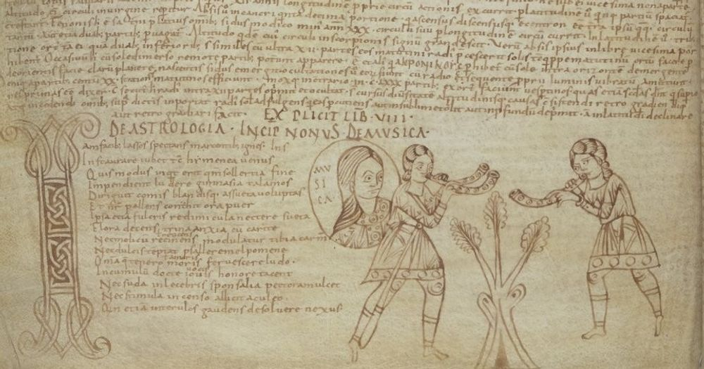

This late ninth- or early tenth-century manuscript was made in Northern Italy, perhaps in Milan. It is a large book, consisting of four parts: the Six Comedies of Terence (f. 1r-26v); works of Horace (f. 27r-56v); Lucan’s Pharsalia and Juvenal’s Satyres (f. 57r-111v); and Martianus Capella’s De nuptiis Philologiae et Mercurii [link to text portrait] with the large commentary tradition attributed to Remigius of Auxerre] ±a± 2sa±a± (f. 112r-155v).
All the texts assembled in this codex are provided with ample commentary, roughly contemporary with the main text. Martianus’s De nuptiis has a particularly rich commentary: the tradition attributed to Remigius, who compiled many commentaries by collecting and collating earlier traditions and merging them into a new one. The pages are filled to the brim with tekst in the margins. [link glosses and commentaries]. The liberal arts [link RhetoricDialectic, slide 7-11]] are illustrated at the beginning of each chapter with pen drawings.
Mixed Contents: The contents of this book are a collection of texts that were typically used in schools, for an advanced introduction into the liberal arts and specifically the arts of language: plays by Terence, poetry by Horace and Lucan, Roman history and moral lessons by Lucan, an encyclopedia of the seven liberal arts by Martianus. The book was composed in Northern Italy, where the tradition of studying the classics in the medieval classroom was strong. On f. 27r Horace’s poetic works begin with a beautiful author’s portrait in the initial. On this page we see the main text, an introduction (accessus) to the author, a commentary in the right margin ánd extra notes in the left margin. A very full page indeed!
bnf790_27_r
Paris, BnF. Lat. 7900A, f.27r
Paris, BnF. Lat. 7900A, f.27r
Paris, BnF, lat. 7900A, f. 27rParis, BnF, lat. 7900A, f. 27r (detail)Paris, BnF, lat. 7900A, f. 27r (detail)
In spite of the fact that the margins are so full, the users of this manuscript still felt that they ran out of space to add material, and added narrow slips in between the pages to get even more material into this collection.
Paris, BnF, lat. 7900A f.84r
Paris, BnF, lat. 7900A: Inserted slips
In some parts, such as f. 116r-v, one can see that the parchment used for this manuscript was not of the best quality: the natural edges of the skin are visible as the edges of the page. From the fact that the text carefully follows the curve at the edge of the page we can conclude that the page was not damaged, but that a sheet was used even when it did not reach the full measurement of the quire.
bnf790_116_r
bnf790_116_v
Paris, BnF, lat.7900A, f. 116rParis, BnF, lat.7900A, f. 116v
Most of this book, in fact, was written on re-used parchment, as a palimpsest: parchment was already used for a text, but then scraped clean to make it usable again for a new text. In many of the pages the scraping or washing clean of the parchment left clear traces: the text that was originally on the page is still faintly visible, or the pages have been so rigorously scraped that it has become very thin. The scraping sometimes even caused holes in the parchment. The underlying text has been identified: it was, so it has been argued, an abridged version of Pseudo-Quintilian’s Declamationes XIX maiores.1
Paris, BnF, lat. 7900A f.26v
Paris, BnF, lat. 7900A, f. 26v: The underlying text has been identified: it was, presumably, an abridged version of Pseudo-Quintilian’s Declamationes XIX maiores.
In more recent times, a chemical substance (re-agent) was applied to the page to make the underlying text visible. It did help initially, in fact, but it left ugly, permanent damage as the chemicals continued to react with the parchment and ink. [link to ms portrait VLQ 103, slide 3]
Paris, BnF, lat. 7900A f.44v
Paris, BnF, lat. 7900A, f. 44v
The book is thus humble in appearance, with very full pages and parchment that is not of a very high quality. Yet it does feature some simple but fanciful initials: here an E made with two peacocks, which is used to mark the beginning of a new section in Juvenal’s Satires on f. 109v. Juvenal’s Satires were a common schooltext in the Middle Ages: with this text students could practice their poetic metres (hexameters), learn about Roman history and were presented with moral lessons about society: killing three birds with one stone.
109v
Paris, BnF, lat.7900A, f. 109v
±row± ±col1±
Here you see the opening of Martianus Capella’s De nuptiis on f. 112r. Note that the main text of Martianus Capella occupies the small column on the left. Its beginning is missing because the page is damaged. Perhaps the text started with a decorated initial that was cut out by a later dealer in manuscripts or manuscript’s pages, or re-purposed in a binding. The wide column on the right is the commentary of Remigius [link to TeachersStudents].
The commentary is a solid block of text instead of a series of notes spread in the margin, signifying that the status of the text has changed and has gained, perhaps, more authority. This was not unusual. In fact, in some cases the roles of main text and commentary were even flipped, and the margin was the space for the commentary [link to Abbeville, slide 7].
The commentary begins with an introduction to the work and its author: “Titulus iste quattuor nomina dat auctori suo” (The title gives four names to the author…). Here we find information about the author, his life and the content of his work. Such an introduction was called an accessus ad auctorem – “introduction to the author”. It was common practice to start a commentary with such an introduction.
±f±bnf790_112_r±f±
±row± ±col1± Simple decorated initials in animal style (f. 120v) mark the beginning of a new book, both for the main text (narrow column on the right) and for the commentary (wide column on the left). It is noteworthy that the pages are so full and the lay-out so cramped, that there is hardly a difference in the size of the letters used for the two categories of text. This is an unusual feature: generally, the main text used a larger letter and the commentary a smaller one.
120v
Paris, BnF, lat.7900A, f. 120v
On this page, the book on Grammar starts with a fanciful initial R (f. 128r). A dragon bearing a remarkably strong resemblance to a crocodile is tickled with a spear! Again, one can see here that the commentary text (column on the right) surpasses the main text (column on the left) in length considerably. A stepped line is used to clarify the boundary between the two texts.
128r
Paris, BnF, lat.7900A, f. 128r
Portraits This manuscript is particularly famous for its charming portraits of the liberal arts, depicted as wise women just as in Martianus Capella’s narrative. Grammar was the discipline of the trivium (the three arts of language of the seven liberal arts [link RhetoricDialectic, slide 10]) which was taught at the basic level of education: in monasteries and cathedral schools, children were taught to read and write Latin, which was of crucial importance because it was the language of the Bible, the liturgy and the Church.
A personification of the discipline of grammar (Lady Grammar) is teaching a schoolclass. The pupils in the front row have wax tablets to practice their letters and words.
On f. 132v a full page illustration features a portrait of lady Dialectica (who speaks about her discipline in book IV of De nuptiis). Two students tentatively approach Lady Dialectica, who is armed with a hook (to reel in the two students on the right) and has snakes coming out of her sleeve (with which she attacks her opponents)! She is a dangerous lady. [link to Iconography of Dialectica]
132v
Paris, BnF, lat. 7900A, f. 132v: 'Lady Dialectica' (left) lures in students (right).
On f. 140v, Lady Rhetoric is depicted, reading from a long and narrow book [link to RhetoricDialectic, slide 5; O’Daly, BPL 84, slide 2].Two arts of the quadrivium Lady Astronomy (f. 151v) and Lady Music (f. 153v) are also portraited. Astronomy is pointing at a globe with stars, Music is accompanied by two musicians playing a single and a double horn.

BnF_lat_7900A_140_v.jpg
bnf790_151_v
BnF_lat_7900A_153_v.jpg
Paris, BnF, lat. 7900A, f. 140v: Portrait of Lady RhetoricParis, BnF, lat. 7900A, f. 151v: Portrait of Lady AstronomyParis, BnF. Lat. 7900A, f. 153v (detail)
*F. Ronconi, «Il codice palinsesto Paris. Lat. 7900A: una nuova ispezione della scriptio inferior», in Approches de la Troisième Sophistique, Bruxelles, 2006 (Latomus), p. 585-588. ↑
Date
901-1000
Place of origin
Northern Italy, perhaps Milan?
Parchment manuscript, 155 ff folia, 340 x 270 mm, manuscript, Latin
I. Publius Terentius Afer, Comoediae sex (f. 1-26). — II. Quintus Horatius Flaccus, Opera (f. 27-56). — III. M. Annaeus Lucanus, Pharsalia (f. 57-94). — Juvenalis, Satyrae (f. 95-111). — IV. Martianus Capella, De nuptiis Mercuri et Philologiae (f. 112-155).